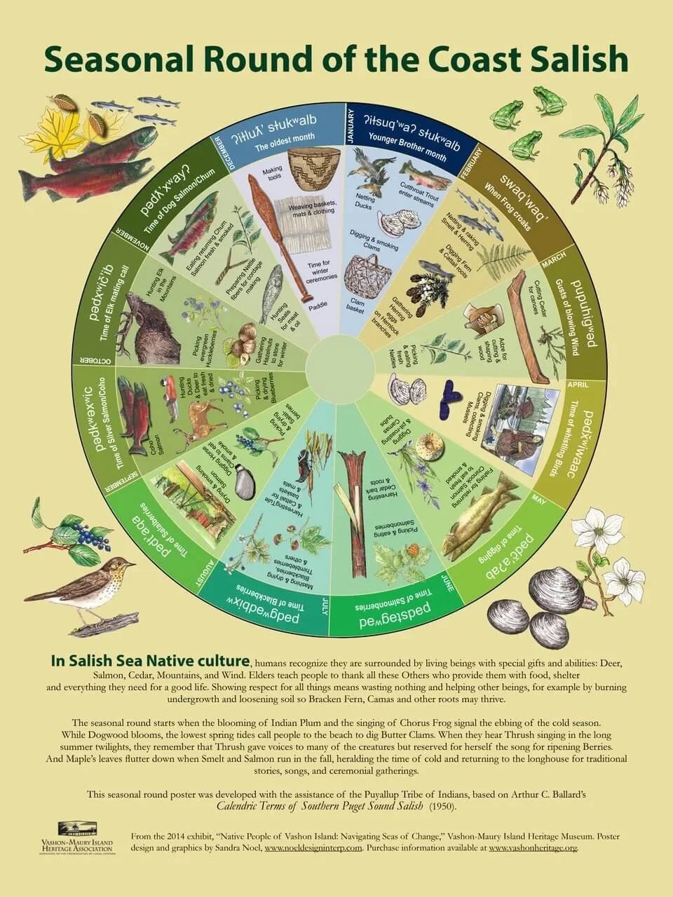

Accessibility
Are the physical space, materials and learning tasks accessible? Are there multiple ways to learn and express understanding?
Students explore meaningful questions, connect ideas across subjects and demonstrate their understanding in different ways. Our lesson design is guided by accessibility, flexibility, student autonomy, creativity, and assessment that recognizes growth and strengths.
These principles guide planning across the school. Teachers consider both the learning experience and the different ways students can access and express their learning.
Are the physical space, materials and learning tasks accessible? Are there multiple ways to learn and express understanding?
Can teachers adapt instruction, materials and participation to respond to students’ educational, physical and cognitive needs?
Are students’ interests and voices heard? Can they make choices and connect learning to their own lives?
Are student voice, strengths and diverse ways of expressing ideas honoured?
Do conversations, observations and varied assessment methods show student learning, growth and strengths?
An interdisciplinary Social Studies and Science lesson explores seasonal changes in nature and connects learning to the seasonal land-based practices of local Indigenous Peoples.

The lesson begins by inviting students to share what they already know about the four seasons and how each season connects to their own lives. Students might add to a class seasonal chart, bring an object or photograph that represents a favourite season, or draw what they imagine the classroom window looks like throughout the year.
Students then explore seasonal cycles and ecosystems through Indigenous-authored storytelling, an Indigenous-created film, or a guest Elder or Knowledge Keeper where appropriate arrangements and protocols are followed.
The lesson is informed by the Coast Salish Seasonal Round, including connections to the Tsleil-Waututh Nation. Local Indigenous knowledge is approached respectfully and should be taught using appropriate Indigenous-authored and community-informed resources and guidance.
Students can engage with the seasonal content through activities that support discussion, hands-on exploration and collaborative thinking.
In groups, students arrange tactile images—such as plants, animals, leaves and water—within the seasonal cycle. Teachers observe their choices and ask questions to uncover and address misunderstandings.
Groups add words, drawings, symbols or questions to four season posters. Posters can rotate between groups so students with mobility needs can remain comfortably in place.
Where a local Elder or Knowledge Keeper is invited following appropriate protocols, students can learn through sharing and a hands-on activity connected to traditional storage methods, such as bentwood containers.
Across a multi-day project, students choose a format that lets them communicate their understanding of four seasonal natural resources and their traditional uses, drawing on the resources taught in the lesson.
Create four sculptures from recyclable or found materials, with one artifact representing a natural resource used in each season. Add a written or verbal explanation of each item and its traditional use.
Create a poster, slideshow, drawing, painting, diagram or infographic with at least four resources—one for each season—and a short explanation of each resource and its use.
Work with a partner on a one- to two-minute scene discussing four natural resources, one connected to each season, and explaining how they were traditionally used. A smaller audience or teacher presentation can be offered.
Teachers gather evidence through observation, student questions, group conversations, activity participation and final projects. The focus is on whether students can identify seasonal resources and explain their significance—not on one narrow way of presenting information.
A possible follow-up lesson could extend the seasonal learning through an outdoor visit, such as observing salmon at Stoney Creek Ravine Park, and exploring opportunities to learn with local Indigenous fisheries and community partners.
This is a proposed future learning opportunity, not a confirmed school program. Any partnership or visit would need to be planned collaboratively with the appropriate community partners.